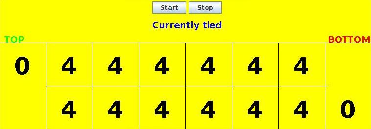

How to Play Mancala
Mancala is an ancient 2-player board game with many variations on how the game is played. The actual (non-computer) game is usually in the form of a long, narrow plank of wood with a grid of hollowed out pits. Two larger bins on each end of the wooden plank are called "mancalas" and are used to collect each player's seeds. When the game starts, the mancalas are empty and each of the pits contains 4 seeds. The two players face each other and each play their own side of the board, accumulating their seeds in the mancala on their right. At the end of the game, the player with the most seeds in their mancala wins the game.
The Mancala gameboard that will be used for this project consists of a 2 x 6 grid with an initial setup of 4 seeds in each pit, as shown below. The two players, Top and Bottom, play the game by taking turns selecting a pit on their side of the board. Top's mancala is on the far left, and Bottom's mancala is on the far right. Either player can go first.

Objective of the Game
The objective of the game is to have more seeds in your mancala than your opponent has in his or hers at the end of the game.
Mancala Rules
The rules of the game vary. We will be playing with the following rules:
- Either player moves first (a coin-flip can determine).
- The player whose turn it is chooses a pit on their own side of the
board and removes all of the seeds in that pit. A pit must
have at least one seed in it to be chosen.
- The seeds that were removed from the chosen pit are distributed to
the other pits by dropping one seed in the other pits around the board,
starting with the pit immediately after the selected pit
(counter-clockwise), until the removed seeds are gone.
- A players drops a seed in their own mancala if they pass over it during
the distribution, but they do not drop one in the opponent's mancala if
they pass over that. The seeds in the mancalas cannot be moved or
removed, and are counted toward each player's final score.
- If the last seed of a distribution falls into a player's own
mancala, then that player gets an extra turn.
- If the last seed of a distribution falls into an empty pit on
the current player's own side, then that player captures the
other player's seeds from the pit directly opposite the empty pit.
A pit is considered to be "empty" if it has no seeds in it
prior to a move (in other words, a seed may be dropped into an empty
pit during a distribution, but that pit still qualifies as "empty").
The opponent's pit opposite the last pit and the last pit are emptied,
and those seeds are added to the current player's mancala.
- When one of the players has no more seeds in any of the pits on
their side of the board, the game is over. Seeds in the mancalas
are counted and the player with the most seeds in his or her mancala
is declared the winner.